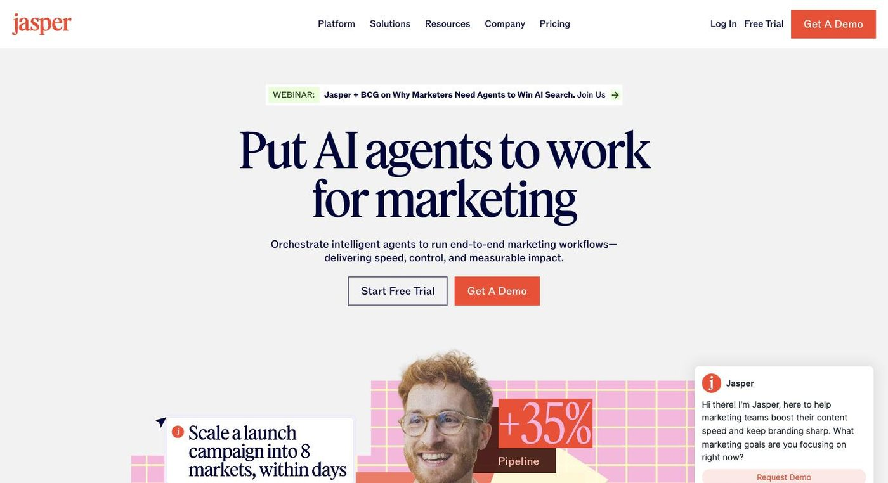

Jasper
AI agent workspace for marketing teams, with brand voice built in

- Category
- Writing & Content
- Pricing
- Pro $69/seat/mo monthly or $59/seat/mo billed yearly; 7-day free trial. Business is custom pricing (contact sales, 12-month commitment).
- Best for
- Good for in-house marketing, content and brand teams and agencies handling several brand voices and channels.
- Official site
- www.jasper.ai
- Last checked
- 2026-10-15
Jasper is a good fit for marketing teams who need many people (and agents) to produce content that sounds like one brand, but solo writers and casual users should skip it as it costs more than general assistants and has no free plan. It is built around a context layer called Jasper IQ that stores brand voice, audiences and product knowledge, plus a library of marketing agents and repeatable pipelines.
On the current pricing page, Pro is a single-seat plan at $59/month billed yearly ($69 monthly) with a 7-day trial; Business is custom-quoted with unlimited brand voices, API access and governance. It positions itself as a workspace for marketing execution rather than a chatbot.
Good for in-house marketing, content and brand teams and agencies handling several brand voices and channels. Not for solo bloggers, students or anyone who needs occasional copy (a general assistant or a free tier elsewhere is cheaper), nor for buyers who need a transparent team price without talking to sales.
Key features
Jasper IQ and brand voice
Stores brand voice, style guides, audiences and product knowledge and applies them to outputs. Pro allows 2 brand voices, 5 knowledge assets and 3 audiences; Business is unlimited.
Marketing agents
Purpose-built agents for SEO and GEO content, campaigns, email, social, personalization, research and translation. Complex ones (GEO, translation, deep research) are on Business.
Content pipelines, Canvas and Grid
Structured workflows from brief to multi-channel content. Canvas is in Pro; Jasper Grid is a Business feature.
Custom agents with AI Studio
A no-code builder for custom agents, listed under Business.
GEO and AI optimization
Measures brand visibility in AI answer engines and helps produce content for it. Usage runs on credits alongside seat pricing.
Images, API and MCP
Image pipelines and APIs, Jasper APIs and an MCP server to carry brand context into other tools; API access is on Business.
Governance
Admin controls and Groups on Business; sales can add SSO and custom style guides.
Pricing breakdown
Pro
- 1 seat included
- Canvas platform
- Agents for core marketing workflows
- 2 brand voices, 5 knowledge assets, 3 audiences
Business
- Everything in Pro
- Agents for GEO, translation and deep research
- No-code custom agent builder and Jasper Grid
- Unlimited brand voices, knowledge and audiences
- API access, admin controls and Groups
- Dedicated account management and priority support
Pros and cons
Pros
- Jasper IQ keeps tone and facts consistent across writers, a real advantage over generic chatbots for teams
- Agents are designed around marketing jobs, so less prompt engineering
- Monthly Pro billing can be cancelled anytime
- Business adds API, governance and custom agent building on one platform
- Free diagnostics (GEO and brand compliance) let you sample the approach
Cons
- No free plan; the trial is 7 days
- Pro limits: 1 seat, 2 brand voices, 5 knowledge assets, 3 audiences
- Business has no public price and a 12-month minimum
- GEO Hub and agent usage consume credits on top of seat fees, so total cost can exceed list price
- Output quality depends on how well brand voice and knowledge are set up
- Costs more than general AI assistants for simple writing
Alternatives to Jasper
Frequently asked questions
Does Jasper have a free plan?
No. There is a 7-day free trial of Pro, but no permanent free plan.
How much does Jasper cost?
Pro is $59/seat/month billed yearly or $69/seat/month billed monthly. Business is custom-priced via sales.
Can a team use Pro?
Pro includes one seat. Multi-user teams should expect to talk to sales about Business, which supports unlimited users.
Is Jasper better than ChatGPT for marketing?
It is better for shared brand voice and governed workflows; a general assistant is cheaper and more flexible for ad-hoc work.
Is there a long-term commitment?
Monthly Pro can be cancelled anytime; annual Pro needs 12 months, and Business starts with 12 months.
Ready to try Jasper?
Head to the official site to explore pricing and start a free trial where available.
Visit Jasper →